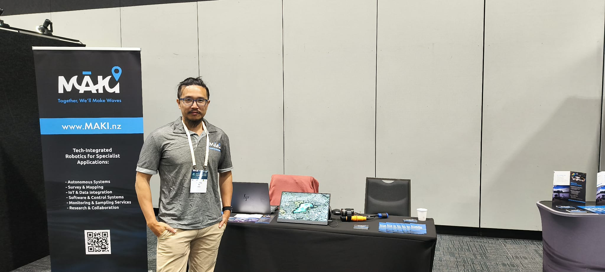

MAKI has just wrapped up an exciting few days exhibiting at the Freshwater Conference 2025, and the experience has been both energising and valuable. The event brought together scientists, councils, innovators, and solution-builders working towards better environmental outcomes across Aotearoa - a space we feel proud to be contributing to.

Showcasing MAKI's Technology
As an exhibitor, we had the opportunity to share our autonomous boat and ROV capabilities with a wide range of delegates. Many were particularly interested in our:
- Water-quality sampling system
- Multi-beam and sonar mapping workflows
- Underwater inspection tools
- AI-assisted data processing
The feedback was positive, and it was great to discuss practical applications across lakes, stormwater ponds, reservoirs, canals, and coastal environments.
Conversations With Councils & Scientists
A key part of the conference for us was engaging with people who are actively working on New Zealand's freshwater challenges. We had meaningful discussions with several regional councils, researchers, and environmental scientists about:
- Monitoring and mapping needs
- Data quality and sampling repeatability
- Opportunities for more efficient and safer field operations
- Future collaboration to trial new approaches
These conversations are invaluable as we continue to develop and scale MAKI's capabilities for use throughout Aotearoa's waterways.
A Highlight - Meeting Sequench Ltd
Among the many great connections made, one in particular stood out. We had the pleasure of meeting Anastasija, the co-founder of Sequench Ltd, a Nelson-based company operating in a similar space with strong alignment in purpose and innovation.
We connected immediately through our shared passion for technology in freshwater environments, and we are already planning a visit to Nelson to learn more about what they do. There is also an exciting possibility that we may travel to Norway together next year - a conversation that left us both inspired for what's possible.
We are grateful for everyone who took the time to speak with us, share knowledge, and explore collaboration ideas. The conference has reinforced that Aotearoa is full of talented people working toward a healthier freshwater future - and MAKI is proud to be a part of that.
Next steps: keep the conversations going, continue building partnerships, and keep pushing innovation forward.